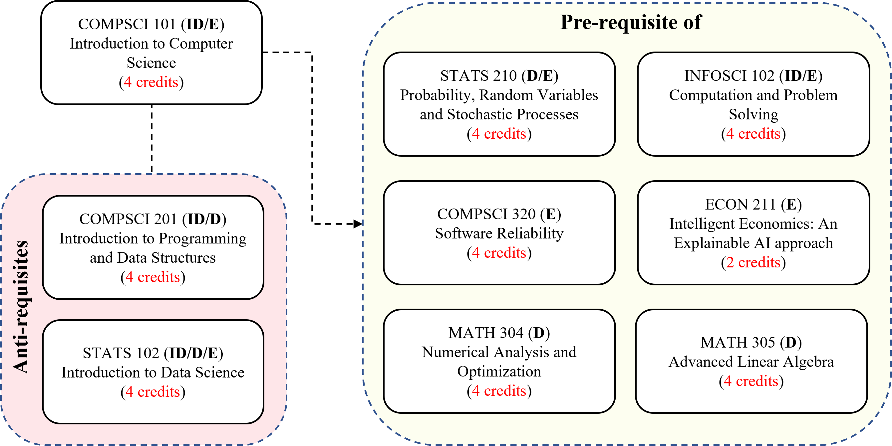

Introduction to Computer Science (COMPSCI 101)
Spring 2022-2023 / Session 3 (7 weeks, 35 + 8.75 | 8.75 hours)
Course Period: January 9 - March 2, 2023
- Lectures: Monday / Tuesday / Wednesday / Thursday @ 08:30-09:45 (Classroom: AB 1079 - Seminar 1A + Zoom)
- Labs:
- 101-001L (1209): Thursday @ 13:15-14:30 (Classroom: AB 3109 - Seminar 3D + Zoom)
- 101-002L (1210): Thursday @ 16:15-17:30 (Classroom: AB 3101 - Seminar 3A + Zoom)
Computer Science (CS) is the study of computation, automation, and information. It spans theoretical disciplines such as algorithms, theory of computation, information theory, and automation, to practical disciplines including the design and implementation of hardware and software. Algorithms and Data Structures are central to CS. The Theory of Computation concerns abstract models of computation and general classes of problems that can be solved using them. The fields of Cryptography and Computer Security involve studying the means for secure communication and for preventing security vulnerabilities. Computer Graphics and Computational Geometry address the generation of images. Programming Language Theory (PLT) considers different ways to describe computational processes, and database theory concerns the management of repositories of data. Human¨CComputer Interaction (HCI) investigates the interfaces through which humans and computers interact, and Software Engineering focuses on the design and principles behind developing software. Areas such as Operating Systems, Computer Networks and Embedded Systems investigate the principles and design behind complex systems. Computer Architecture describes the construction of computer components and computer-operated equipment. Artificial Intelligence (AI) aims to synthesize goal-orientated processes such as problem-solving, decision-making, environmental adaptation, planning and learning found in humans and animals.
CS is an exciting, growing and challenging field that impacts every part of our lives. As an introductory course, fundamental knowledge on a variety of CS topics will be offered while providing essential computational problem-solving skills with hands on programming experience, in Python. This course is open to everyone, with no prerequisites. Successfully completing it will serve as a solid foundation for other courses in the CS or Data Science majors. It can also bring new concepts and tools to other domains such as Social Sciences, Arts, Humanities and Natural Sciences.
Despite the detailed knowledge and skills about CS, we also want you to develop your high level capabilities closely related to the DKU's animating principles, in particular, collaborative problem-solving, research and practice besides lucid communication. In this course, there will be group activities and projects that encourage collaborative problem solving. There will also be weekly lab sessions to facilitate group discussions on mini-projects. The final project(s) will provide an opportunity to utilize the knowledge acquired in this course for addressing a specific problem. Moreover, these group discussion and project presentation activities will help you enhance the capability of lucid communication.
By the end of this course, you will be able to:
- grasp common computing and programming terms and concepts
- employ common programming patterns and abstractions to solve problems through Python
- formulate problems computationally and solve them through programming
- plan and manage the progress of final project in an efficient way
- develop written and oral presentation skills

The chart, on the right, shows how COMPSCI 101 fits to the DKU curriculum, where the abbreviations indicate the course types, i.e. D: Divisional, DF: Divisional Foundation, ID: Interdisciplinary and E: Elective. Refer to the DKU Undergraduate Bulletin for more details.
Pre-requisites
- None
Anti-requisites
- COMPSCI 201: Introduction to Programming and Data Structures
- STATS 102: Introduction to Data Science
There is no official textbook for this course. Still, the following books can be used as references.
Reference Books
- Introduction to Computation and Programming Using Python: With Application to Computational Modeling and Understanding Data, John V. Guttag (3rd Edition), 2021, MIT Press [ Source Code in Python ]
- Introducing Python for Computer Science and Data Scientists, Paul Deitel, Harvey Deitel (1st Edition), 2020, Pearson
- Computer Science: an Interdisciplinary Approach, Robert Sedgewick, Kevin Wayne (1st Edition), 2016, Addison Wesley
- Explorations in Computing: An Introduction to Computer Science and Python Programming, John S. Conery (1st Edition), 2014, Chapman and Hall/CRC
- Foundations of Computer Science: C Edition, Al Aho, Jeff Ullman (1st Edition), 1994 / 1995, W.H. Freeman (Free Book)
- Computer Science: An Overview, Glenn Brookshear, Dennis Brylow-Pearson (13th Edition), 2018, Pearson
- Computer Science Distilled: Learn the Art of Solving Computational Problems, Wladston Ferreira Filho (1st Edition), 2017, Code Energy LLC
- Data Structures and Algorithms in Python, Michael T. Goodrich, Roberto Tamassia, Michael H. Goldwasser (1st Edition), 2013, Wiley
- Python Programming: An Introduction to Computer Science, John Zelle (3rd Edition), 2016, Franklin, Beedle & Associates
- Problem Solving with Algorithms and Data Structures using Python, Brad Miller and David Ranum, Franklin (2nd Edition), 2011, Beedle & Associates (Free Book)
- Starting out with Python, Tony Gaddis (5th Edition), 2021, Pearson
- Think Python: How to Think Like a Computer Scientist, Allen B. Downey (2nd Edition), 2016, O'Reilly Press (Free Book)
- How to Think Like a Computer Scientist: Learning with Python 3, Peter Wentworth, Jeffrey Elkner, Allen B. Downey, Chris Meyers (3rd Edition), 2012 (Free Book)
- A Programmer's Guide to Computer Science (Vol. 1), William M. Springer II (1st Edition), 2019, Jaxson Media
- A Programmer's Guide to Computer Science (Vol. 2), William M. Springer II (1st Edition), 2020, Jaxson Media
- A Byte of Python, Swaroop C. H. (4th Edition), 2016 (Free Book)
- Project Python, Devin Balkcom, 2011 (Free Book)
- Python for Everybody: Exploring Data in Python 3, Charles Severance, 2016 (Free Book)
- Automate The Boring Stuff With Python, Al Sweigart (2nd Edition), 2019, No Starch Press (Free Book)
- Beyond the Basic Stuff with Python: Best Practices for Writing Clean Code, Al Sweigart (1st Edition), 2020, No Starch Press (Free Book)
- Python Programming in Context, Bradley N. Miller, David L. Ranum, Julie Anderson (3rd Edition), 2019, Jones & Bartlett Learning
- A Hands-On, Project-Based Introduction to Programming, Eric Matthes (2nd Edition), 2016, No Starch Press (Free Book)
- Learn Python 3 the Hard Way, Zed A. Shaw (1st Edition), 2017, Addison-Wesley
- Introducing Python: Modern Computing in Simple Packages, Bill Lubanovic (2nd Edition), 2019, O'Reilly Press
- Clean Code in Python: Develop Maintainable and Efficient Code, Mariano Anaya (2nd Edition), 2021, Packt
- The Self-Taught Computer Scientist: The Beginner's Guide to Data Structures & Algorithms, Cory Althoff (1st Edition), 2021, Wiley
- The Big Book of Small Python Projects: 81 Easy Practice Programs, Al Sweigart (1st Edition), 2021, No Starch Press (Free Book)
- Invent Your Own Computer Games with Python, Al Sweigart (4th Edition), 2016, No Starch Press (Free Book)
- Cracking Codes with Python: An Introduction to Building and Breaking Ciphers, Al Sweigart (1st Edition), 2018, No Starch Press (Free Book)
Lecture Notes / Slides
- Week 0: Programming (Optional)
- Scratch Programming
- Free Book: Scratch 3 Programming Playground: Learn to Program by Making Cool Games by Al Sweigart, 2021
- Week 1: Introduction, Background and Python Programming I [09/01 - 12/01] (Keywords: Terminology and Basics; Variables; Expressions; Statements)
- About COMPSCI 101
- Lecture Slides: L1-0: About COMPSCI 101
- Computer Science: Basics
- Lecture Slides: L1-1: Computer Science - Basics
- Book Chapter (Optional): Introduction to Computation and Programming Using Python by John V. Guttag - Chapter 1: Getting Started
- Book Chapter (Optional): Blown to Bits by Hal Abelson, Ken Ledeen, Harry Lewis - Chapter 1: Dijital Explosion
- External Video(s): Computer Pioneers: Part 1 & Part 2 by Computer History Museum
- Python Programming: Background
- Lecture Slides: L1-2: Python Programming - Background
- External Lecture Slides / Videos / Book Chapter: Python for Everybody by Charles R. Severance - Chapter 1 (Introduction)
- Book Chapter (Optional): Introduction to Computation and Programming Using Python by John V. Guttag - Chapter 2: Introduction to Python
- Variables, Statements and Basic Operators
- Lecture Slides: L1-3: Python Programming - Variables, Statements and Basic Operators
- External Lecture Slides / Videos / Book Chapter: Python for Everybody by Charles R. Severance - Chapter 2 (Variables)
- Book Chapter (Optional): Introduction to Computation and Programming Using Python by John V. Guttag - Chapter 2.1: The Basic Elements of Python
- Control Statements
- Lecture Slides: L1-4: Python Programming - Control Statements
- External Lecture Slides / Videos / Book Chapter: Python for Everybody by Charles R. Severance - Chapter 3 (Conditionals)
- Book Chapter (Optional): Introduction to Computation and Programming Using Python by John V. Guttag - Chapter 2.2: Branching Programs
- External Lecture Slides / Videos / Book Chapter: Python for Everybody by Charles R. Severance - Chapter 5 (Loops & Iterations)
- Book Chapter (Optional): Introduction to Computation and Programming Using Python by John V. Guttag - Chapter 2.4: Iteration, Chapter 3.2: For Loops
- Functions
- External Lecture Slides / Videos / Book Chapter: Python for Everybody by Charles R. Severance - Chapter 4 (Functions)
- Book Chapter (Optional): Introduction to Computation and Programming Using Python by John V. Guttag - Chapter 4.1: Functions and Scoping
- Book Chapter (Optional): Introducing Python for Computer Science and Data Scientists by Paul Deitel, Harvey Deitel - Chapter 4: Functions
- Lab: Turtle Graphics
- Daily Homeworks: TBA
- Weekly Mini Project 1: TBA
- Week 2: Python Programming II [16/01 - 19/01] (Keywords: Strings; Lists; Tuples; Dictionaries; Sets; Files; Python: Turtle)
- Strings
- Lecture Slides: L2-1: Python Programming - Strings
- External Lecture Slides / Videos / Book Chapter: Python for Everybody by Charles R. Severance - Chapter 6 (Strings)
- Book Chapter (Optional): Introduction to Computation and Programming Using Python by John V. Guttag - Chapter 2.3: Strings and Input
- Sequence Collections: Lists and Tuples
- Lecture Slides: L2-2: Python Programming - Sequence Collections
- External Lecture Slides / Videos / Book Chapter: Python for Everybody by Charles R. Severance - Chapter 8 (Lists)
- Book Chapter (Optional): Introduction to Computation and Programming Using Python by John V. Guttag - Chapter 5.3: Lists and Mutability
- External Lecture Slides / Videos / Book Chapter: Python for Everybody by Charles R. Severance - Chapter 10 (Tuples)
- Book Chapter (Optional): Introduction to Computation and Programming Using Python by John V. Guttag - Chapter 5.1: Tuples
- Non-Sequence Collections: Dictionaries and Sets
- Lecture Slides: L2-3: Python Programming - Non-Sequence Collections
- External Lecture Slides / Videos / Book Chapter: Python for Everybody by Charles R. Severance - Chapter 9 (Dictionaries)
- Book Chapter (Optional): Introduction to Computation and Programming Using Python by John V. Guttag - Chapter 5.6: Dictionaries
- External Tutoial: A Random Online Tutorial - Sets
- Files
- Lecture Slides: L2-4: Python Programming - Files
- External Lecture Slides / Videos / Book Chapter: Python for Everybody by Charles R. Severance - Chapter 7 (Files)
- Book Chapter (Optional): Introduction to Computation and Programming Using Python by John V. Guttag - Chapter 4.6: Files
- Lab: Files
- Daily Homeworks: TBA
- Weekly Mini Project 2: TBA
- Chinese New Year / Spring Festival [21/01 - 27/01] - No Lectures (Academic Calendar)
- Week 3: Python Programming III [30/01 - 02/02] (Keywords: Exceptions, Assertions, Testing, Debugging, Object-Oriented Programming)
- Exceptions and Assertions
- Lecture Slides: L3-1: Python Programming - Exceptions and Assertions
- External Tutoial: Official Python Documentation - Errors and Exceptions
- Book Chapter (Optional): Introduction to Computation and Programming Using Python by John V. Guttag - Chapter 7: Exceptions and Assertions
- Book Chapter (Optional): Introducing Python for Computer Science and Data Scientists by Paul Deitel, Harvey Deitel - Chapter 9: Files and Exceptions
- Testing and Debugging
- Lecture Slides: L3-2: Python Programming - Testing and Debugging
- Book Chapter (Optional): Introduction to Computation and Programming Using Python by John V. Guttag - Chapter 6: Testing and Debugging
- Book Chapter (Optional): Data Structures and Algorithms in Python by Michael T. Goodrich et al. - Chapter 2.2.4: Testing and Debugging
- Object-Oriented Programming (OOP)
- Lecture Slides: L3-3: Classes and Objects
- External Lecture Slides / Videos / Book Chapter: Python for Everybody by Charles R. Severance - Chapter 14 (Object-Oriented Programming)
- Book Chapter (Optional): Introducing Python for Computer Science and Data Scientists by Paul Deitel, Harvey Deitel - Chapter 10: Object-Oriented Programming
- Book Chapter (Optional): Introduction to Computation and Programming Using Python by John V. Guttag - Chapter 8: Classes and Object-Oriented Programming
- Lab: OOP
- Daily Homeworks: TBA
- Weekly Mini Project 3: TBA
- Week 4: Algorithmic Concepts and Computational Problems [06/02 - 9/02] (Keywords: Algorithms; Computational Problems; Recursion; Searching; Sorting; Computational Complexity; Big-O)
- Recursion
- Lecture Slides: L4-2: Recursion
- Book Chapter (Optional): Introduction to Computation and Programming Using Python by John V. Guttag - Chapter 4.3: Recursion
- Book Chapter (Optional): Introducing Python for Computer Science and Data Scientists by Paul Deitel, Harvey Deitel - Chapter 11: Computer Science Thinking
- Book Chapter (Optional): Data Structures and Algorithms in Python by Michael T. Goodrich et al. - Chapter 4: Recursion
- Searching and Sorting
- Lecture Slides: L4-3: Searching and Sorting
- Book Chapter (Optional): Introduction to Computation and Programming Using Python by John V. Guttag - Chapter 10: Algorithms and Data Structures
- Book Chapter (Optional): Introducing Python for Computer Science and Data Scientists by Paul Deitel, Harvey Deitel - Chapter 11: Computer Science Thinking
- Book Chapter (Optional): Data Structures and Algorithms in Python by Michael T. Goodrich et al. - Chapter 12: Searching and Selection
- Computational Complexity
- Lecture Slides: L4-4: Computational Complexity
- Book Chapter (Optional): Introduction to Computation and Programming Using Python by John V. Guttag - Chapter 9: Algorithmic Complexity
- Book Chapter (Optional): Introducing Python for Computer Science and Data Scientists by Paul Deitel, Harvey Deitel - Chapter 11: Computer Science Thinking
- Book Chapter (Optional): Data Structures and Algorithms in Python by Michael T. Goodrich et al. - Chapter 3: Algorithm Analysis
- Lab: Fractals, OOP
- Daily Homeworks: TBA
- Weekly Mini Project 4: TBA
- MIDTERM (Date: TBA)
- Week 5: Elementary Data Structures [13/02 - 16/02] (Keywords: Abstract Data Types; Data Structures; Stack; Queues; Linked Lists; Trees)
- Stacks
- Lecture Slides: L5-1: Stacks
- External Lecture Slides / Videos: CS50 (Harvard U.) - Introduction to Computer Science [ Fall 2022 (Week 5): Data Structures ] [ Short: Stacks ]
- Book Chapter (Optional): Data Structures and Algorithms in Python by Michael T. Goodrich et al. - Chapter 6.1: Stacks
- TBA
- Queues
- Lecture Slides: L5-2: Queues
- External Lecture Slides / Videos: CS50 (Harvard U.) - Introduction to Computer Science [ Fall 2022 (Week 5): Data Structures ] [ Short: Queues ]
- Book Chapter (Optional): Data Structures and Algorithms in Python by Michael T. Goodrich et al. - Chapter 6.2: Queues
- TBA
- Linked Lists
- Lecture Slides: L5-3: Linked Lists
- External Lecture Slides / Videos: CS50 (Harvard U.) - Introduction to Computer Science [ Fall 2022 (Week 5): Data Structures ] [ Short: Linked Lists ]
- Book Chapter (Optional): Data Structures and Algorithms in Python by Michael T. Goodrich et al. - Chapter 7: Linked Lists
- TBA
- Trees
- Lecture Slides: L5-4: Trees
- Book Chapter (Optional): Data Structures and Algorithms in Python by Michael T. Goodrich et al. - Chapter 8: Trees
- TBA
- Lab: TBA
- Daily Homeworks: TBA
- Weekly Mini Project 5: TBA
- Week 6: Web Programming [20/02 - 23/02] (Keywords: Web Programming; HTML; CSS; JavaScript)
- HyperText Markup Language (HTML)
- Lecture Slides: L5-1: HTML
- External Tutorial: W3Schools - HTML Tutorial
- Cascading Style Sheets (CSS)
- Lecture Slides: L5-2: CSS
- External Tutorial: W3Schools - CSS Tutorial
- JavaScript
- Lecture Slides: L5-3: JavaScript
- External Tutorial: W3Schools - JavaScript Tutorial
- Lab: TBA
- Daily Homeworks: TBA
- Weekly Mini Project 6: TBA
- Week 7: Machine Learning (ML) [27/02 - 02/03] (Keywords: Probability; Statistics; Random Variables; Distributions)
- Introduction to Machine Learning
- Lecture Slides: L7-1: Introduction to Machine Learning
- Book Chapter: Python Data Science Handbook - Chapter 5 (What is Machine Learning?)
- Book Chapter (Optional): Introduction to Computation and Programming Using Python by John V. Guttag - Chapter 22: A Quick Look at Machine Learning
- Book Chapter (Optional): Introducing Python for Computer Science and Data Scientists by Paul Deitel, Harvey Deitel - Chapter 15: Machine Learning
- Article: Jordan, M.I., 2019. Artificial intelligence-the revolution hasn't happened yet. Harvard Data Science Review, 1(1)
- Article: Jordan, M.I. and Mitchell, T.M., 2015. Machine learning: Trends, perspectives, and prospects. Science, 349(6245), pp.255-260
- Learning Problem
- Lecture Slides: L7-2: Learning Problem
- Tutorial: Scikit-learn Tutorial - An introduction to machine learning with scikit-learn
- External Video: CS156: Learning Systems (Yaser Abu-Mostafa, Caltech) - Learning Problem
- Book Chapter (Optional): Introduction to Computation and Programming Using Python by John V. Guttag - Chapter 22: A Quick Look at Machine Learning
- Book Chapter (Optional): Introducing Python for Computer Science and Data Scientists by Paul Deitel, Harvey Deitel - Chapter 15: Machine Learning
- Machine Learning Algorithms
- Lecture Slides: L7-3: Machine Learning Algorithms
- Book Chapter (Optional): Introduction to Computation and Programming Using Python by John V. Guttag - Chapter 23: Clustering, Chapter 24: Classification Methods
- Book Chapter (Optional): Introducing Python for Computer Science and Data Scientists by Paul Deitel, Harvey Deitel - Chapter 15: Machine Learning
- Lab: scikit-learn
- Daily Homeworks: TBA
- Group Project: TBA
- FINAL EXAM: TBA
Grading
- Homework: 20%
- Mathematical, Conceptual, or Programming related
- Submit on Sakai; 6 in total, the lowest score is dropped
- Weekly Journal: 10%
- Each week, write a page or so about what you have learned
- Submit on Sakai; 2 points off for each missing journal, capped at 10
- Midterm: 20%
- Final: 30%
- Project: 20%
- Report Rubrick (TBA)
- Presentation Rubrick (TBA)
Reference Courses
Introductory Computer Science / (Python) Programming:- 6.00: Introduction to Computer Science and Programming (MIT) [ Lecture Videos ]
- CS 50: Introduction to Computer Science (Harvard U.) [ Lecture Slides & Videos ]
- COS 126: General Computer Science (Princeton U.) [ Lecture Slides & Videos ]
- 15-110: Principles of Computing (CMU) [ Lecture Slides ]
Other Books / Articles
Computing / Computers + History:- Computing: A Concise History, Paul E. Ceruzzi (1st Edition), 2012, MIT Press
- Code: The Hidden Language of Computer Hardware and Software, Charles Petzold (1st Edition), 2000, Microsoft Press
- The Elements of Computing Systems: Building a Modern Computer from First Principles, Noam Nisan, Shimon Schocken (2nd Edition), 2021, MIT Press
- The Constitution of Algorithms: Ground-Truthing, Programming, Formulating, Florian Jaton (1st Edition), 2021, MIT Press
- Ideas that Created the Future: Classic Papers of Computer Science, Harry R. Lewis (1st Edition), 2021, MIT Press
- The Art of Doing Science and Engineering: Learning to Learn, Richard R. Hamming (1st Edition), 2005/2020, Gordon and Breach Science Publishers / Stripe Press
- Blown to Bits: Your Life, Liberty, and Happiness After the Digital Explosion, Hal Abelson, Ken Ledeen, Harry Lewis (2nd Edition), 2020, Addison-Wesley (Free Book)
- Lauren Ipsum: A Story About Computer Science and Other Improbable Things, Carlos Bueno (1st Edition), 2014, No Starch Press
- The Big Score: The Billion-Dollar Story of Silicon Valley, Michael S. Malone (2nd Edition), 2021, Stripe Press
- IBM: The Rise and Fall and Reinvention of a Global Icon, James W. Cortada, 2019, MIT Press
- ENIAC in Action-Making and Remaking the Modern Computer, Thomas Haigh, Mark Priestley, Crispin Rope, 2016, MIT Press
- Colossus: The Secrets of Bletchley Park's Codebreaking Computers, Jack Copeland (Ed.), 2006, Oxford University Press
- OO in One Sentence: Keep it Dry, Shy, and Tell the Other Guy. Hunt, A., Thomas, D., 2004. IEEE Software, 21(3)
- Refactoring: Improving the Design of Existing Code, Martin Fowler (2nd Edition), 2018, Addison-Wesley
- Clean Code: A Handbook of Agile Software Craftsmanship, Robert C. Martin (1st Edition), 2008, Pearson
- Code Complete: A Practical Handbook of Software Construction, Steve McConnell (2nd Edition), 2004, Microsoft Press [ Online Course ]
- The Pragmatic Programmer: Your Journey to Mastery, David Thomas, Andrew Hunt (2nd Edition), 2019, Addison-Wesley
- Internet and World Wide Web: How To Program, Paul Deitel, Harvey Deitel, Abbey Deitel (5th Edition), 2011, Pearson
- Learning Web Design: A Beginner's Guide to HTML, CSS, JavaScript, and Web Graphics, Jennifer Robbins (5th Edition), 2018, O'Reilly
- HTML and CSS QuickStart Guide, David DuRocher (1st Edition), 2021, ClydeBank
- HTML and CSS: Design and Build Websites, Jon Duckett (1st Edition), 2011, John Wiley & Sons
- JavaScript: The Definitive Guide, David Flanagan (7th Edition), 2020, O'Reilly
- Eloquent Javascript: A Modern Introduction to Programmin, Marijn Haverbeke (3rd Edition), 2018, No Starch Press
- Concrete Mathematics: A Foundation for Computer Science, Ronald L. Graham, Donald E. Knuth, Oren Patashnik (2nd Edition), 1994, Addison-Wesley
- Mathematics for Computer Science, Eric Lehman, F. Thomson Leighton, Albert R. Meyer (1st Edition), 2017 (2018R), Samurai Media (Free Book) [ 6.042: Mathematics for Computer Science (MIT) - Materials ]
- Mathematics: A Discrete Introduction, Edward A. Scheinerman (3rd Edition), 2012, Cengage Learning
- Discrete Mathematics and Its Applications, Kenneth H. Rosen (8th Edition), 2019, McGraw-Hill
- Discrete Mathematics: An Open Introduction, Oscar Levin (3rd Edition), 2021 (Free Book)
- Essential Discrete Mathematics for Computer Science, Harry Lewis, Rachel Zax (1st Edition), 2019, Princeton University
- Connecting Discrete Mathematics and Computer Science, David Liben-Nowell (1st Edition), 2022, Cambridge University Press
- Book of Proof, Richard H. Hammack (3rd Edition), 2018 (Free Book)
- Applied Combinatorics, Mitchel T. Keller, William T. Trotter (3rd Edition), 2021 (Free Book)
- A Decade of the Berkeley Math Circle: The American Experience (Volume 1, Volume 2), Zvezdelina Stankova, Tom Rike (Eds), 2008, American Mathematical Society
- How to Think Like a Mathematician: A Companion to Undergraduate Mathematics, Kevin Houston (1st Edition), 2009, Cambridge University Press
- The Art of Problem Solving (Vol. 2): And Beyond, Richard Rusczyk, Sandor Lehoczky (7th Edition), 2006, AoPS Incorporated
- The Art of Problem Solving (Vol. 1), Sandor Lehoczky, Richard Rusczyk (7th Edition), 2006, AoPS Incorporated
- What Is Mathematics? An Elementary Approach to Ideas and Methods, Richard Courant, Herbert Robbins (2nd Edition), 1996, Oxford University Press
Algorithms + Data Structures:
- Introduction to Algorithms, Thomas H. Cormen, Charles E. Leiserson, Ronald L. Rivest and Clifford Stein (3rd Edition), 2009, MIT Press (Free Book: ProQuest - Duke U.) [ Lecture Slides ]
- Algorithm Design, John Kleinberg, Eva Tardos (1st Edition), 2005, Pearson - Addison Wesley [ Lecture Slides & Examples ]
- Algorithms, Sanjoy Dasgupta, Christos Papadimitriou, Umesh Vazirani (1st Edition), 2006, McGraw-Hill
- Algorithms, Robert Sedgewick, Kevin Wayne (4th Edition), 2011, Addison-Wesley
- Introduction to the Analysis of Algorithms, Robert Sedgewick, Philippe Flajolet (2nd Edition), 2013, Addison-Wesley [ Lecture Slides & Videos ]
- The Algorithm Design Manual, Steven Skiena (3rd Edition), 2020, Springer [ Old: Lecture Slides & Videos - New: Lecture Slides & Videos ]
- Foundations of Algorithms, Richard Neapolitan (5th Edition), 2014, Jones & Bartlett Learning
- Data Structures and Algorithm Analysis in C++, Mark A. Weiss (4th Edition), 2014, Pearson [ Source Code in C++ ]
- Algorithm Design and Applications, Michael T. Goodrich, Roberto Tamassia (1st Edition), 2015, Wiley
- Algorithms Illuminated (Part 1): The Basics, Tim Roughgarden (1st Edition), 2017, Soundlikeyourself Publishing [ Lecture Slides & Videos ]
- Algorithms Illuminated (Part 2): Graph Algorithms and Data Structures, Tim Roughgarden (1st Edition), 2018, Soundlikeyourself Publishing [ Lecture Slides & Videos ]
- Algorithms Illuminated (Part 3): Greedy Algorithms and Dynamic Programming, Tim Roughgarden (1st Edition), 2019, Soundlikeyourself Publishing [ Lecture Slides & Videos ]
- Algorithms Illuminated (Part 4): Algorithms for NP-Hard Problems, Tim Roughgarden (1st Edition), 2020, Soundlikeyourself Publishing [ Lecture Slides & Videos ]
- Introduction to the Design and Analysis of Algorithms, Anany Levitin (3rd Edition), 2011, Addison-Wesley
- Design and Analysis of Computer Algorithms, Alfred Aho, John Hopcroft, Jeffrey Ullman (1st Edition), 1974, Addison-Wesley
- Data Structures and Algorithms, Alfred Aho, Jeffrey Ullman (1st Edition), 1983, Pearson
- Fundamentals of Computer Algorithms, Ellis Horowitz, Sartaj Sahni (1st Edition), 1984, CS Press
- A Guide to Algorithm Design: Paradigms, Methods, and Complexity Analysis, Anne Benoit, Yves Robert, Frederic Vivien (1st Edition), 2014, CRC
- Algorithms: Sequential, Parallel, and Distributed, Kenneth A. Berman, Jerome L. Paul (1st Edition), 2004, Course Technology
- The Design and Analysis of Algorithms, Dexter C. Kozen (1st Edition), 1992, Springer
- Algorithms, Jeff Erickson (1st Edition), 2019 (Free Book)
- The Design of Approximation Algorithms, David P. Williamson, David B. Shmoys (1st Edition), 2011, Cambridge University (Free Book)
- Approximation Algorithms, Vijay V. Vazirani (1st Edition), 2003, Springer
- Introduction to the Theory of Computation, Michael Sipser (3rd Edition), 2013, Cengage
- What Can Be Computed?: A Practical Guide to the Theory of Computation, John MacCormick (1st Edition), 2018, Princeton University
- Computational Complexity: A Modern Approach, Sanjeev Arora, Boaz Barak (1st Edition), 2009, Cambridge University (Free Draft)
- Algorithms and Complexity, Herbert S. Wilf (2nd Edition), 2002, CRC
- Complexity Theory: Exploring the Limits of Efficient Algorithms, Ingo Wegener (1st Edition), 2005, Springer
- Automata, Computability and Complexity: Theory and Applications, Elaine A. Rich (1st Edition), 2007, Pearson (Free Book)
- Think Complexity, Allen B. Downey (2nd Edition), 2016 / 2018, Green Tea Press / O'Reilly Press (Free Book) [ Source Code in Python ]
- Dive Into Algorithms: A Pythonic Adventure for the Intrepid Beginner, Bradford Tuckfield (1st Edition), 2021, No Starch Press
- Algorithms in a Nutshell: A Practical Guide, George T. Heineman, Gary Pollice, Stanley Selkow (2nd Edition), 2016, O'Reilly Press (Partially Python)
- A Common-Sense Guide to Data Structures and Algorithms: Level Up Your Core Programming Skills, Jay Wengrow (2nd Edition), 2020, Pragmatic Bookshelf [ Source Code in Python, Ruby and JavaScript ]
Other Materials / Resources
- Oxford Quick Reference: A Dictionary of Computer Science by Andrew Butterfield, Gerard Ekembe Ngondi, Anne Kerr, 2016
- Official Python Documentation: Tutorial & Glossary
- An Overview of Python Data Visualization libraries
- Philip W. L. Fong, 2009. Reading a Computer Science research paper. ACM SIGCSE Bulletin, 41(2), pp.138-140
- You and Your Research by Richard Hamming (Bell Labs / NPS). Bell Communications Research Colloquium Seminar, 7 March 1986
- An Online LaTeX Editor: Overleaf
- LaTeX Tutorial (Overleaf): Learn LaTeX in 30 minutes
- The Not So Short Introduction to LaTeX by Tobias Oetiker, Hubert Partl, Irene Hyna, Elisabeth Schlegl, 2021
- Git Tutorials & Cheat Sheet by Atlassian
- Git Cheat Sheet by Github
- Pro Git (a book on Git) by Scott Chacon and Ben Straub, 2021
- Version Control with Git by Software Carpentry
- How To Speak / Present (Video) by Patrick Winston (MIT)